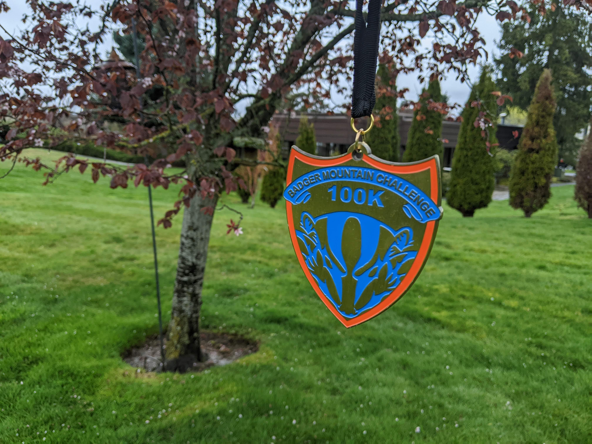
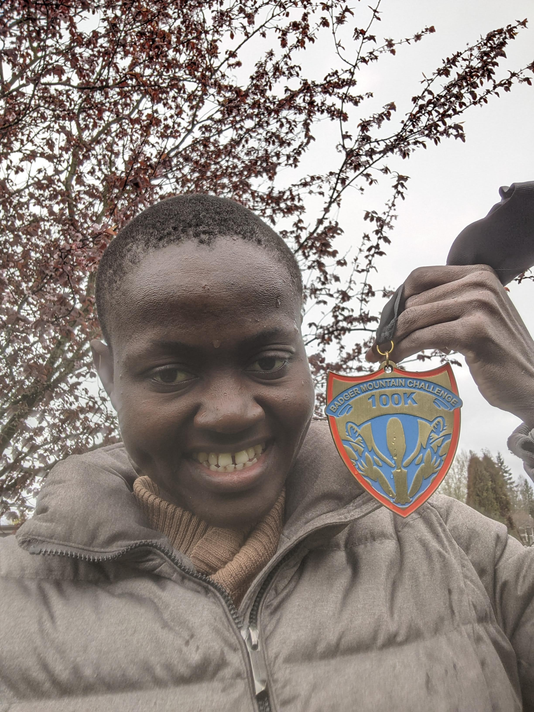

A few weeks ago I ran my first 100K, the Badger Mountain 100K challenge. I crossed the finish line after 16 hours making it my furthest and longest effort, ever. I could give you a thousand reasons why it was a good idea to run the race: fitness, challenge, adventure … among many others. They’d all be valid but the real value I got from it was the fact that it was on my calendar; neatly partitioning it into a before and after era. While the priority in the before era was to train as best as I could, the after era prioritized recovery. Even if I failed to finish the race, I’d still count it a win, simply for its value as an anchor.Photo by Lucas Sankey on Unsplash
Life revolves around anchors and whether or not we realize it, we need them. Simply put anchors are events with some kind of rhythm. They may serve different purposes but they all invoke some degree of intention, connection and reflection. While runners anchor around races, there is a lot from where they come: New Years, birthdays, anniversaries, spiritual rituals, daily routines … the list goes on. The more I think about them, the more ubiquitous they become. In a sea of randomness, anchors are the moments that stand out, to varying degrees. For instance monthly lunch with a mentor is a good anchor, it has a monthly rhythm and the elements (intention, connection and reflection) are implied. While winning the lottery might be a grandiose event and a happy one indeed, it lacks rhythm and intentionality necessary to be an anchor. Anchors are things to look forward to, they provide camaraderie and a sense of control amidst uncertainity. In their absence, life becomes monotonous string of meaningless activity.
Photo by Marc-Olivier Jodoin on Unsplash
In our formative years, anchors were all around us; parents threw our parties while institutions calibrated our academic milestones. There wasn’t much space for voluntary anchors. As that changes, we are granted the opportunity to design our very own anchors. As for me and many other masochists runners, the finish line of a race is one of those things that makes for a really epic anchor. Some create anchors out of important personal milestones while others latch onto family or community events. The details don’t much as the fact that they exist in our calendars and our minds.
With that said, What are your anchors? Do they reflect what’s important to you? Anchors should change as we grow and evolve so its always a good idea to prune and make space for new ones. I should know, I’ve just ticked off 100K off my bucketlist; I’ll take my time to come up with new anchors. In the meantime, I hope you do the same. Go create new goals, celebrate yourself, celebrate your people. The only guarantee I have is that you’ll be the best version of yourself and that’s worth a ton.
